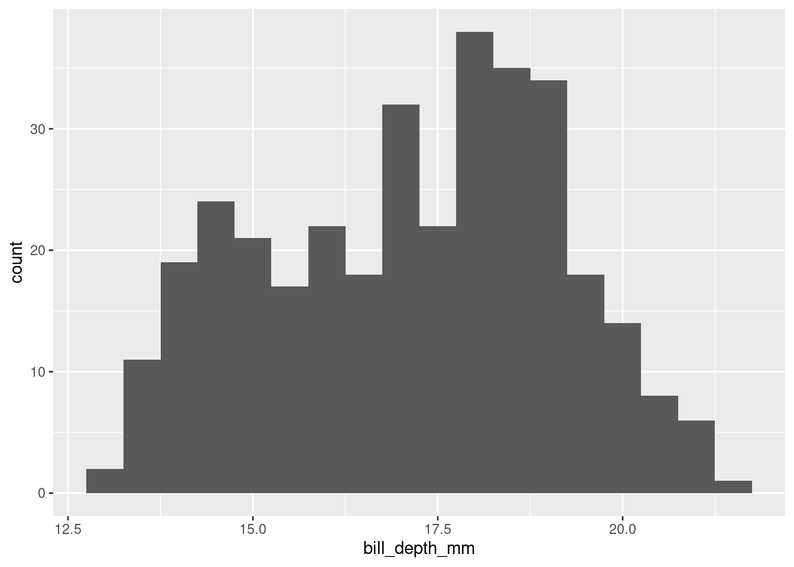
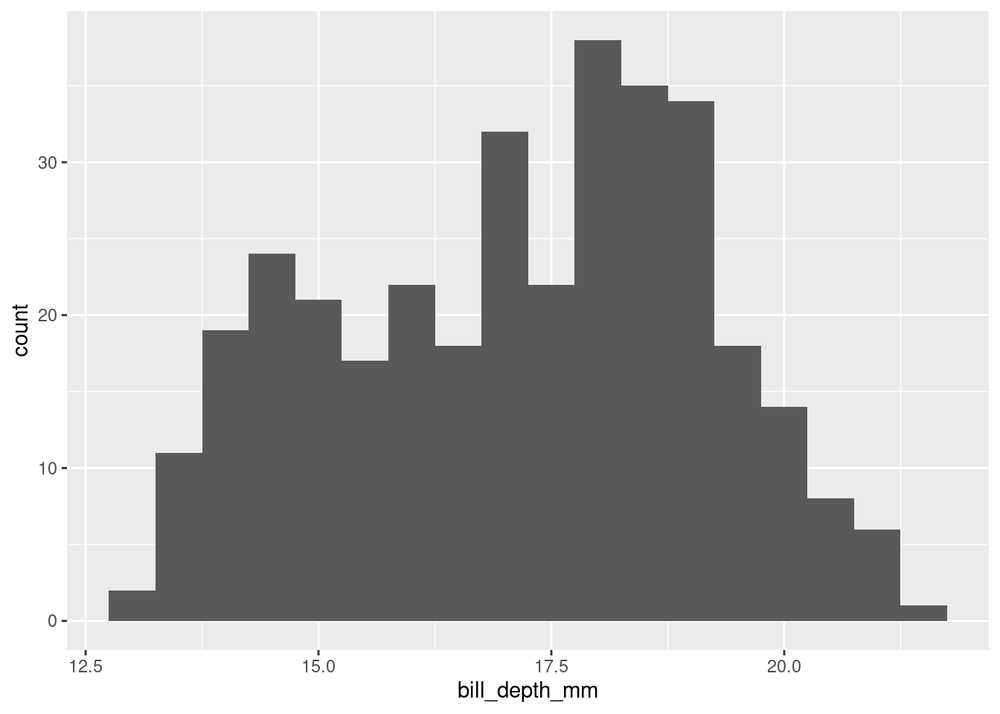
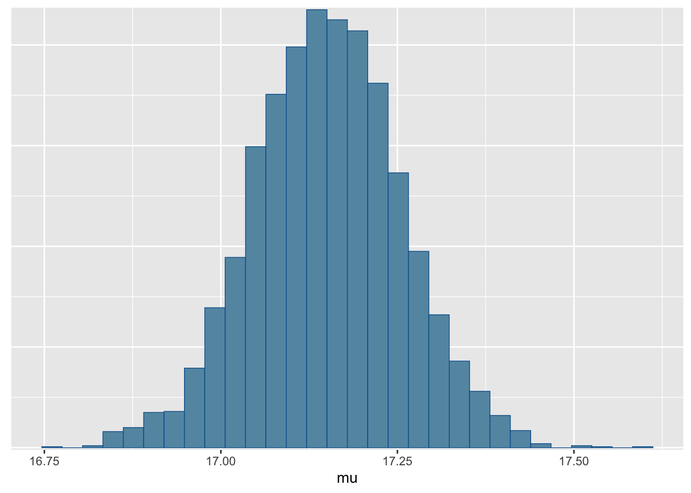
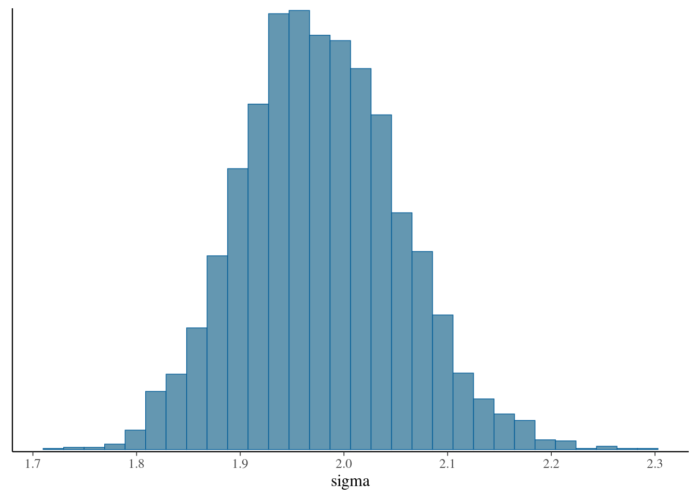
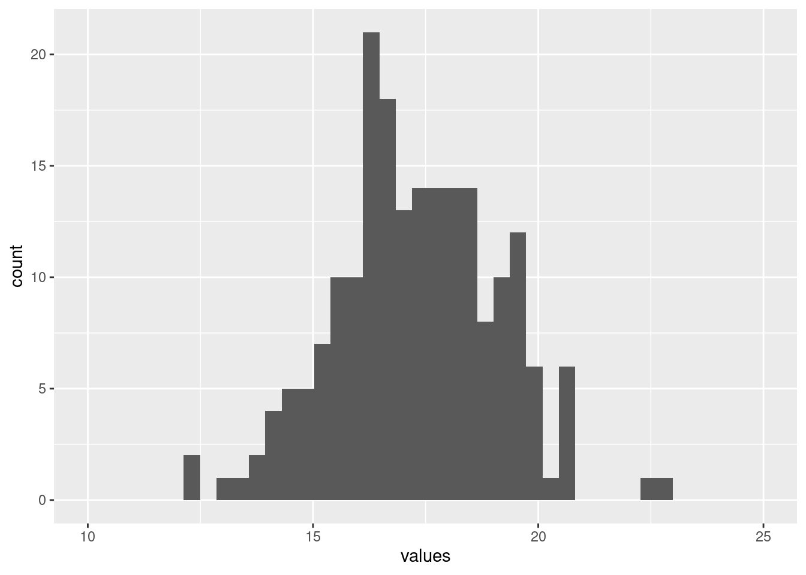
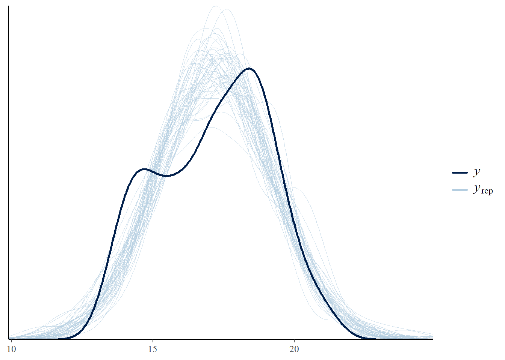
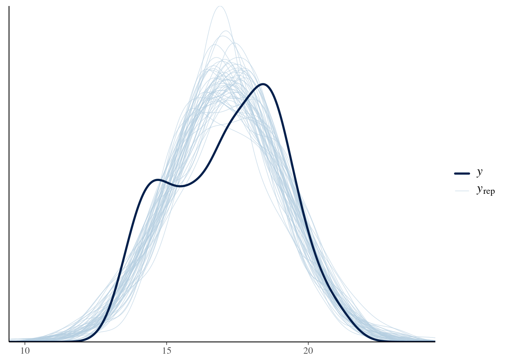
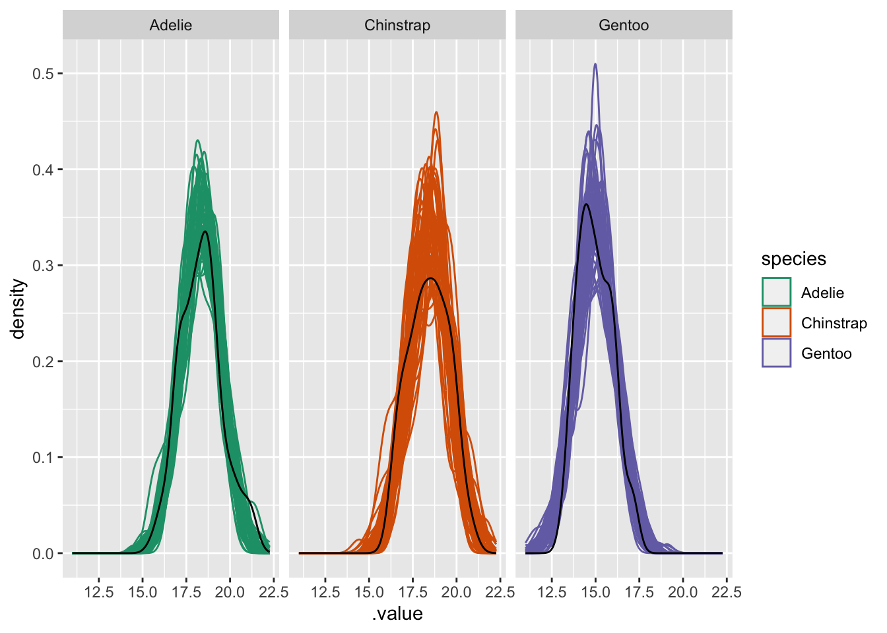
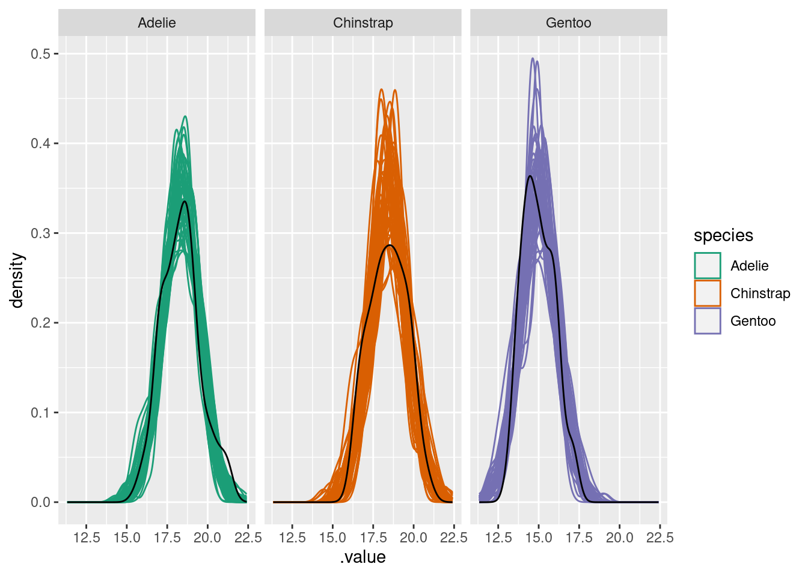

library(tidyverse)
library(palmerpenguins)
penguins |>
ggplot(aes(x=bill_depth_mm)) +
geom_histogram(binwidth = .5)Warning: Removed 2 rows containing non-finite values (`stat_bin()`).
fitting a model with discrete predictors.
Let’s start by taking a look at the Palmer Penguin dataset. Let’s look at the distribution of observations of bill size.
library(tidyverse)
library(palmerpenguins)
penguins |>
ggplot(aes(x=bill_depth_mm)) +
geom_histogram(binwidth = .5)Warning: Removed 2 rows containing non-finite values (`stat_bin()`).
There’s quite a lot of variation in these measurements, with a suggestion of perhaps more than one peak in this distribution.
\[ \begin{align} \text{Bill depth} &\sim \text{Normal}(\mu, \sigma)\\ \mu &\sim \text{Normal}(17.5, 2) \\ \sigma &\sim \text{Exponential}(1) \\ \end{align} \]
let’s express the same model in Stan:
library(cmdstanr)This is cmdstanr version 0.7.1- CmdStanR documentation and vignettes: mc-stan.org/cmdstanr- CmdStan path: /home/andrew/software/cmdstan- CmdStan version: 2.34.1normal_dist <- cmdstan_model("topics/discrete_predictor/normal_dist.stan")
normal_distdata {
int N;
vector[N] measurements;
}
parameters {
real mu;
real<lower=0> sigma;
}
model {
// priors
mu ~ normal(17,2);
sigma ~ exponential(1);
// likelihood
measurements ~ normal(mu, sigma);
}The model section looks very much like the mathematics shown above. I want you to notice especially how the bottom chunk has three lines, each describing a probability distribution. Models are devices for putting together the probability of all the quantities we are looking for. Again, a Bayesian separates the world into unmeasured or measured quantities – and above we state which are observed (the data block) and which are unobserved (the parameters block).
We can fit this model to data and see the result:
# first we drop all NA values
penguins_nobillNA <- penguins |>
#drop NA values
filter(!is.na(bill_depth_mm))
## then we assemble the data as a list.
## I'm using the base function with()
## it lets me use the variable name directly
## without writing penguins_nobillNA$bill_depth_mm
list_bill_dep <- with(penguins_nobillNA,
list(N = length(bill_depth_mm),
measurements = bill_depth_mm))
## sample 4 chains, suppress counting iterations
samp_bill_dep <- normal_dist$sample(data = list_bill_dep,
parallel_chains = 4,
refresh = 0)Running MCMC with 4 parallel chains...
Chain 1 finished in 0.0 seconds.
Chain 2 finished in 0.0 seconds.
Chain 3 finished in 0.0 seconds.
Chain 4 finished in 0.0 seconds.
All 4 chains finished successfully.
Mean chain execution time: 0.0 seconds.
Total execution time: 0.2 seconds.## summarize the samples for each parameter into a nice table
samp_bill_dep |>
posterior::summarise_draws() |>
knitr::kable()| variable | mean | median | sd | mad | q5 | q95 | rhat | ess_bulk | ess_tail |
|---|---|---|---|---|---|---|---|---|---|
| lp__ | -405.514525 | -405.208500 | 0.9977619 | 0.6990459 | -407.501000 | -404.566000 | 1.001842 | 1615.835 | 2281.705 |
| mu | 17.152647 | 17.152050 | 0.1060854 | 0.1043009 | 16.980995 | 17.330930 | 1.000769 | 3300.521 | 2599.964 |
| sigma | 1.978273 | 1.975145 | 0.0762528 | 0.0761019 | 1.857754 | 2.105638 | 1.001583 | 3264.434 | 2693.953 |
We don’t have one distribution for each of our unknown numbers: we have thousands. We need to get a sense of what these possible values mean scientifically. An excellent way to do this is by making as many pictures as possible. We will start with making plots of specific parameters.
We can look at the distributions easily using the bayesplot package.
draws <- samp_bill_dep$draws(variables = c("mu", "sigma"))
bayesplot::mcmc_hist(draws, pars = "mu")`stat_bin()` using `bins = 30`. Pick better value with `binwidth`.bayesplot::mcmc_hist(draws, pars = "sigma")`stat_bin()` using `bins = 30`. Pick better value with `binwidth`.

Notice that the distributions do not have the same shape as the prior– this is particularly true for \(\sigma\). This shows an important point: the prior distribution does not determine what the posterior looks like.
library(ggplot2)
library(ggdist)
draws |>
posterior::as_draws_df() |>
ggplot(aes(x = sigma)) +
stat_dotsinterval()ggdist has many fun & useful ways to draw pictures of posterior distributions. Here is one called stats_dotsinterval()
People care so much about model diagnostics. And with good reason: you need to know how much to trust a model before using it to make a scientific claim. One way to find out which model is best would be to use them to make a prediction, and see how right you are. An alternative is to see how well the data fit your sample.
# just get some draws
draws <- samp_bill_dep$draws(variables = c("mu", "sigma"))
draws_matrix <- posterior::as_draws_matrix(draws)
## set up a matrix. for every posterior sample,
## (that is, for a value of mu and a value of sigma)
## draw a whole fake dataset from a normal distribution with that mean and sd.
nsamples <- 50
yrep <- matrix(0, ncol = list_bill_dep$N, nrow = nsamples)
# pick some random rows
set.seed(1234)
chosen_samples <- sample(1:nrow(draws_matrix), replace = FALSE, size = nsamples)
subset_draws <- draws_matrix[chosen_samples,]
for (r in 1:nsamples){
yrep[r,] <- rnorm(n = list_bill_dep$N,
mean = subset_draws[r, "mu"],
sd = subset_draws[r, "sigma"])
}
bayesplot::ppc_dens_overlay(y = list_bill_dep$measurements,
yrep = yrep)
In the code above I show how to simulate the posterior predictive distribution using the posterior draws for \(\mu\) and \(\sigma\). However, if you want, you can do the same process in Stan.
generated quantities block. (Tip: look back at the Simulation exercise).normal_dist_rng <- cmdstan_model(stan_file = "topics/discrete_predictor/normal_dist_rng.stan")
normal_dist_rngdata {
int N;
vector[N] measurements;
}
parameters {
real mu;
real<lower=0> sigma;
}
model {
measurements ~ normal(mu, sigma);
mu ~ normal(17,2);
sigma ~ exponential(1);
}
generated quantities{
vector[N] yrep;
for (i in 1:N){
yrep[i] = normal_rng(mu, sigma);
}
}Here we have a handy random number generator inside Stan.
samp_bill_dep_rng <- normal_dist_rng$sample(
data = list_bill_dep,
refresh = 0,
parallel_chains = 4)Running MCMC with 4 parallel chains...Chain 2 Informational Message: The current Metropolis proposal is about to be rejected because of the following issue:Chain 2 Exception: normal_lpdf: Scale parameter is 0, but must be positive! (in '/tmp/RtmpYRTfHe/model-e4812a51a851.stan', line 10, column 2 to column 35)Chain 2 If this warning occurs sporadically, such as for highly constrained variable types like covariance matrices, then the sampler is fine,Chain 2 but if this warning occurs often then your model may be either severely ill-conditioned or misspecified.Chain 2 Chain 1 finished in 0.1 seconds.
Chain 2 finished in 0.1 seconds.
Chain 3 finished in 0.1 seconds.
Chain 4 finished in 0.1 seconds.
All 4 chains finished successfully.
Mean chain execution time: 0.1 seconds.
Total execution time: 0.3 seconds.draws <- samp_bill_dep_rng$draws(variables = c("yrep"))
draws_matrix <- posterior::as_draws_matrix(draws)
bayesplot::ppc_dens_overlay(y = list_bill_dep$measurements,
yrep = head(draws_matrix, 50))
The code is much shorter, because there is less to do in R.
Both of these gives the same outcome: the posterior predictive distribution. This gives us a straightfoward way to test our model’s performance:
let’s add in differences among species
penguins |>
ggplot(aes(x = bill_depth_mm, fill = species))+
geom_histogram(binwidth = .5) +
scale_fill_brewer(palette = "Dark2")Warning: Removed 2 rows containing non-finite values (`stat_bin()`).
Now we can see that the distribution is in fact three different shapes, all placed together.
Sometimes scientists will plot histograms of data at the beginning of a research project, and use the histogram to decide if their data are “normally distributed” or not. This is not helpful! Instead, decide on a model first, and ask yourself what kind of data you expect.
\[ \begin{align} \text{Bill depth}_{i} &\sim \text{Normal}(\mu_{\text{sp}[i]}, \sigma) \\ \mu_{\text{sp}} &\sim \text{Normal}(17, 2) \\ \sigma &\sim \text{Exponential}(2) \\ \end{align} \]
normal_dist_rng_spp_forloop <- cmdstan_model(stan_file = "topics/discrete_predictor/normal_dist_rng_spp_forloop.stan")
normal_dist_rng_spp_forloopdata {
int N;
vector[N] measurements;
array[N] int<lower=1,upper=3> spp_id;
}
parameters {
vector[3] mu;
real<lower=0> sigma;
}
model {
for (i in 1:N){
measurements[i] ~ normal(mu[spp_id[i]], sigma);
}
mu ~ normal(17,2);
sigma ~ exponential(1);
}
generated quantities{
vector[N] yrep;
for (i in 1:N){
yrep[i] = normal_rng(mu[spp_id[i]], sigma);
}
}There’s a few differences to notice here:
data block: We have a new input! A declaration of the array of integers at the top, saying if this is “species 1”, “species 2”, or “species 3”mu is a vector now. why?A very useful technique, in both R and Stan, is transforming a vector with indexing. Vector indexing requires two vectors: the first contains values we want to select or replicate, the second contains integers giving the positions of the elements we want. For example:
some_values <- c("taco", "cat", "goat", "cheeze", "pizza")
positions <- c(1,1,2,2,3,1,1,5)
some_values[positions][1] "taco" "taco" "cat" "cat" "goat" "taco" "taco" "pizza"This works for number values as well, and is very useful when you want to do simulations! let’s simulate three groups with different averages.
set.seed(525600)
some_means <- c(12, 17, 19)
some_labels <- c("taco", "cat", "goat")
df_of_means <- data.frame(index = rep(1:3, each = 42)) |>
mutate(the_mean = some_means[index],
labels = some_labels[index],
obs = rnorm(n = length(the_mean),
mean = the_mean,
sd = 1))
df_of_means |>
ggplot(aes(x = obs, fill = labels)) +
geom_histogram()`stat_bin()` using `bins = 30`. Pick better value with `binwidth`.
We can use this precise technique in Stan:
normal_dist_rng_spp <- cmdstan_model(stan_file = "topics/discrete_predictor/normal_dist_rng_spp.stan")
normal_dist_rng_sppdata {
int N;
vector[N] measurements;
array[N] int<lower=1,upper=3> spp_id;
}
parameters {
vector[3] mu;
real<lower=0> sigma;
}
model {
measurements ~ normal(mu[spp_id], sigma);
mu ~ normal(17,2);
sigma ~ exponential(1);
}
generated quantities{
vector[N] yrep;
for (i in 1:N){
yrep[i] = normal_rng(mu[spp_id[i]], sigma);
}
}The only difference to the previous model is in the line with the for-loop, which is now replaced with a vectorized expression. This is faster to write and will run faster in Stan. However it’s not possible in every case.
Fit one (or both) of the species-specific models above. 1. What changes do you need to make to the input data? Remember we’ve added a new input: a vector of numbers 1, 2, or 3 that tells us if we are working with the first, second, or third species. There are many ways to do this (e.g. try using as.numeric after as.factor)
2. Visualize the posterior with bayesplot. Does it look better than the model without species? How can you tell?
list_bill_dep_spp <- with(penguins_nobillNA,
list(
N = length(bill_depth_mm),
measurements = bill_depth_mm,
spp_id = as.numeric(as.factor(species))
)
)
samp_normal_dist_rng_spp <- normal_dist_rng_spp$sample(
data = list_bill_dep_spp,
parallel_chains = 4,
refresh = 0)Running MCMC with 4 parallel chains...
Chain 1 finished in 0.1 seconds.
Chain 2 finished in 0.1 seconds.
Chain 3 finished in 0.1 seconds.
Chain 4 finished in 0.1 seconds.
All 4 chains finished successfully.
Mean chain execution time: 0.1 seconds.
Total execution time: 0.3 seconds.samp_normal_dist_rng_spp$draws(variables = c("mu", "sigma")) |>
posterior::summarise_draws() |>
knitr::kable()| variable | mean | median | sd | mad | q5 | q95 | rhat | ess_bulk | ess_tail |
|---|---|---|---|---|---|---|---|---|---|
| mu[1] | 18.342111 | 18.343000 | 0.0903448 | 0.0902903 | 18.193885 | 18.49411 | 1.0009652 | 4500.886 | 2992.683 |
| mu[2] | 18.414473 | 18.414200 | 0.1381799 | 0.1374370 | 18.186955 | 18.64132 | 1.0007758 | 4798.435 | 3080.274 |
| mu[3] | 14.985503 | 14.985300 | 0.1013407 | 0.1014840 | 14.818200 | 15.15663 | 1.0010026 | 4151.403 | 3283.383 |
| sigma | 1.124076 | 1.121725 | 0.0434414 | 0.0427434 | 1.055824 | 1.19891 | 0.9997731 | 4879.822 | 3210.395 |
Let’s take a look at this in Shinystan
shinystan::launch_shinystan(samp_normal_dist_rng_spp)and we can repeat the posterior checking from before:
spp_yrep_draws <- samp_normal_dist_rng_spp$draws(variables = c("yrep"))
spp_draws_matrix <- posterior::as_draws_matrix(spp_yrep_draws)
bayesplot::ppc_dens_overlay(y = list_bill_dep$measurements,
yrep = head(spp_draws_matrix, 50))
The predicted distribution is now much more like the real data
tidybayesWe can also make figures for each individual species. Here we will move away from using bayesplot and try to visualize our posterior using the handy functions in the tidybayes package
library(tidybayes)
spp_draws_df <- posterior::as_draws_df(spp_yrep_draws)
normal_dist_post_samp <- tidybayes::gather_draws(samp_normal_dist_rng_spp,
yrep[row_id],
ndraws = 50)
normal_dist_post_samp |>
mutate(species = penguins_nobillNA$species[row_id]) |>
ggplot(aes(x = .value, colour = species)) +
geom_density(aes(group = .iteration), alpha = .1) +
facet_wrap(~species) +
geom_density(aes(x = bill_depth_mm),
data = penguins_nobillNA,
colour = "black") +
scale_colour_brewer(palette = "Dark2")
tidybayes::compose_data is a convenient way to set up your data for passing it into R. Try out this function. What does it produce for our dataset? How do you need to modify our Stan program so that it works for the output of tidybayes::compose_data?Try this on your own data!